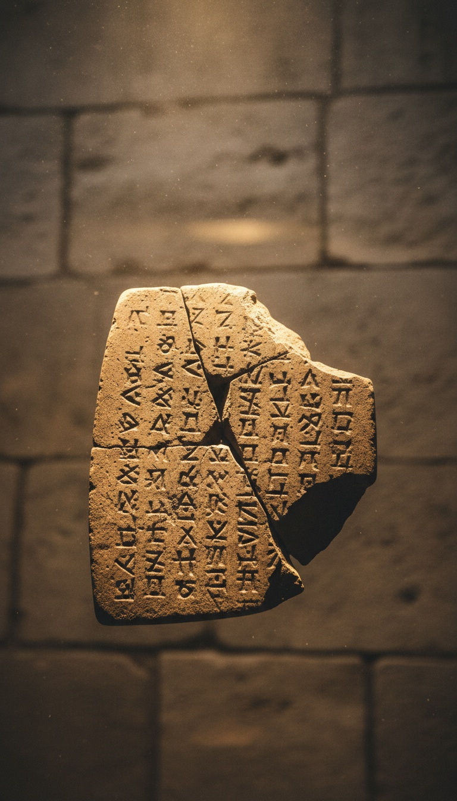

The story of Noah was carved into wet clay in southern Iraq more than a thousand years before the Book of Genesis existed as a written text. Same boat. Same dove. Same mountain. Different god.
The tablet sits in the British Museum right now. You can walk in and look at it. Room 55, case ten.

The Tablet That Predates Moses
The artifact is called Tablet XI of the Epic of Gilgamesh, and it was excavated in 1853 by Hormuzd Rassam from the ruins of the Library of Ashurbanipal at Nineveh in modern-day Iraq. It is currently held in the British Museum in London under registration number K.3375.
The tablet was translated in 1872 by George Smith, a self-taught assistant at the museum who reportedly began undressing in excitement when he realized what he was reading. His announcement at the Society of Biblical Archaeology on December 3, 1872, sent London into a theological panic.
The reason for the panic was simple. The cuneiform script on that tablet described a global flood, a chosen survivor, a giant sealed boat, and a bird released to test for dry land. It had been buried under sand since roughly 612 BC, and its source material was older still.
Utnapishtim Was Noah First
The survivor in the Babylonian version is named Utnapishtim, and the god who warns him is Ea, the deity of freshwater and wisdom. Ea speaks through the reed wall of a hut, telling Utnapishtim to tear down his house and build a vessel.
The dimensions given in Tablet XI describe a cube-shaped ark of seven decks, sealed inside and out with bitumen, the same tar-like pitch specified in Genesis 6:14. Utnapishtim loads his family, craftsmen, and the seed of every living thing.
The flood lasts six days and seven nights in the Babylonian text. The boat comes to rest on Mount Nisir, identified by most Assyriologists as Pir Omar Gudrun in the Zagros range of northern Iraq. Genesis 8:4 places Noah's ark on the mountains of Ararat, a peak roughly 500 miles to the north.
The Bird Test Is Identical
Utnapishtim releases a dove. The dove finds no perch and returns. He releases a swallow. It also returns. He releases a raven, and the raven does not come back, because the waters have receded and the raven has found carrion to eat.
Genesis 8 gives Noah the same sequence in a shortened form. A raven that does not return. A dove released three times, the second time bringing back an olive leaf. The literary fingerprint is unmistakable.
Utnapishtim then offers a sacrifice on the mountaintop. The text says the gods "smelled the sweet savor" and gathered like flies around the offering. Genesis 8:21 uses the identical phrasing. The Lord smelled the pleasing aroma.
The Sumerian Source Is Older Still
Tablet XI was itself a copy. The story appears earlier in the Atrahasis Epic, dated to roughly 1700 BC during the reign of Hammurabi's great-grandson Ammi-Saduqa. Fragments are held at the British Museum and the Morgan Library in New York.
Older still is the Sumerian Eridu Genesis, dated to around 2300 BC, which names the flood hero Ziusudra and locates the story at the city of Shuruppak. The tablet fragment is stored at the University of Pennsylvania Museum in Philadelphia under catalog number CBS 10673.
That places the earliest written flood narrative more than 1,400 years before scholars date the composition of the Torah, which most academic consensus, including work by Richard Elliott Friedman at UC San Diego, puts between roughly 900 and 500 BC.
The Hebrews spent seventy years captive in Babylon and came home with a flood story that was already sitting on the shelves of the libraries that held them.
The Babylonian Captivity Is the Smoking Gun
In 597 BC, King Nebuchadnezzar II of Babylon deported the Judean elite to Mesopotamia. A second, larger deportation followed in 586 BC after the destruction of Solomon's Temple. The captivity lasted until Cyrus the Great of Persia released them in 539 BC.
During those decades, the exiled Judean scribes lived inside the very civilization that had preserved Utnapishtim's story for over a thousand years. The Babylonian priesthood maintained active copies of Gilgamesh in temple libraries throughout the sixth century BC.
Most academic reconstructions, including the Documentary Hypothesis refined by scholars like Julius Wellhausen and later Friedman, place the final redaction of Genesis in the post-exilic period. The flood account in Genesis 6 through 9 shows two interwoven sources, the Yahwist and the Priestly, both bearing Mesopotamian structural DNA.
The Cover-Up Was Never Subtle
When George Smith published his translation in 1876 as The Chaldean Account of Genesis, Victorian clergy scrambled to argue that the Babylonian version was a corrupted copy of the true Hebrew original. The chronology made that impossible. The clay was older than the parchment by a thousand years.
The response shifted. Apologists began arguing that both stories descended from a shared historical event, a real global flood witnessed by both cultures. That requires a planetary deluge leaving no geological signature, no sediment layer, and no genetic bottleneck detectable in modern population studies conducted by teams like the 1000 Genomes Project.
The alternative is the one the tablets themselves suggest. Genesis was not the first draft. It was the rewrite.
The British Museum lets you photograph Tablet XI for free. It sits behind glass, cracked across the middle, its wedge-shaped script still legible after twenty-six centuries underground. Every priest, pastor, and Sunday school teacher who ever told you the flood story was working from the second edition.
The question is not whether the story was borrowed. The chronology settled that in 1872. The question is what else in Genesis was copied from the libraries of Nineveh, Babylon, and Shuruppak, and who decided you were never supposed to know.
If Noah was Utnapishtim, and Utnapishtim was Ziusudra, who was Ziusudra copying? Drop your theory in the comments.
Before you go
7 books the Vatican doesn't want you reading. Free PDF — the texts they cut, with sources. Joined by 140+ Inner Circle members.
No spam. Unsubscribe anytime.
Go deeper
The Hidden Canon, Vol. I — Enoch. Jubilees. Thomas. Mary. Judas. 90 pages, 14 chapters, every receipt cited. The books your Bible quietly removed.
Read the Canon →Books that informed this investigation
As an Amazon Associate, Hidden Epoch earns from qualifying purchases. Cost to you: nothing.
Research safely
The VPN we use to research without being tracked. First 3 months free.
Get NordVPN →